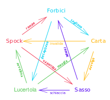

La morra cinese, comunemente conosciuta come Sasso-Carta-Forbice, è un gioco di mano popolare, spesso giocato dai bambini.
Il gesto di partenza del gioco è quasi identico a quello del "pari o dispari", e il gioco viene usato spesso in contesti analoghi, ovvero quando si debba "tirare a sorte".
Se non sai giocare clicca qui 